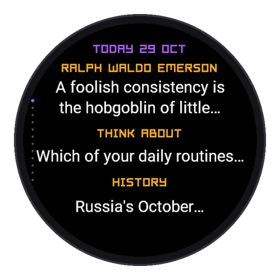
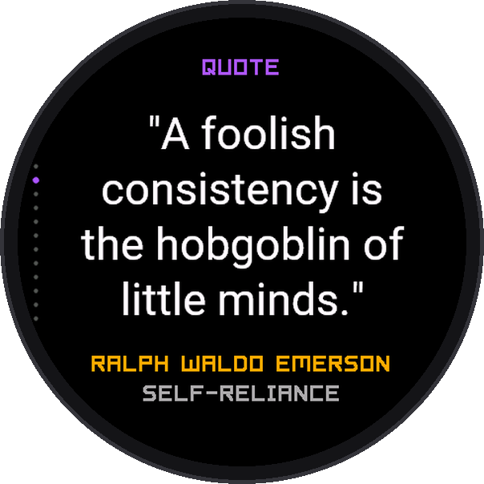
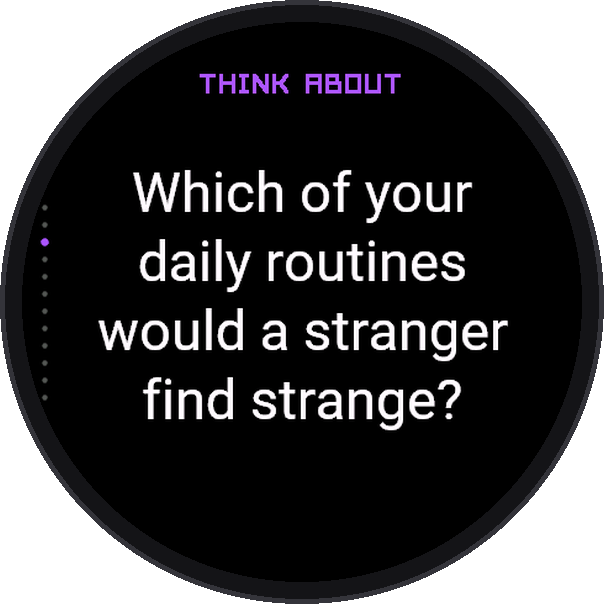
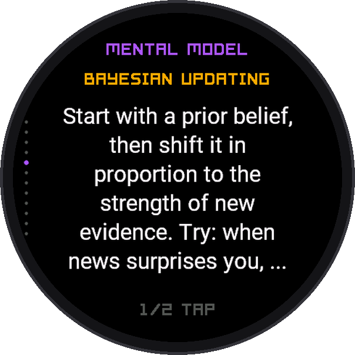
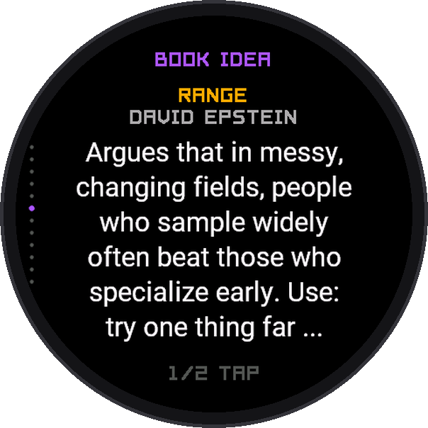
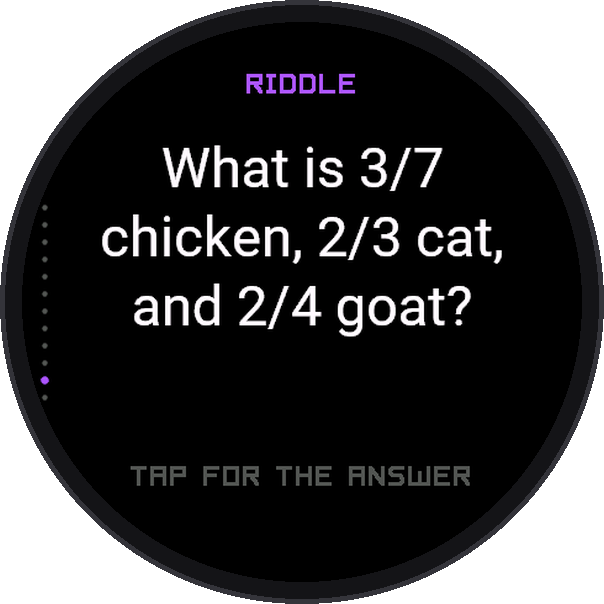

Watch app
Pharos Mind
For the moments when your watch is all you have: a queue, a train, a waiting room. Short, good things to read, new every day. Every quote, fact and date checked.
Get it on Connect IQ





Twelve screens
- Today: the day's quote, question and fact in one place
- Quotes with their real author and source; questions to think about and a guided reflection
- Mental models and book ideas, each with one way to use it today
- Facts, on this day in history, and Wikipedia's notes on the places near you
- The country you are in: language, money, plugs, emergency number and key phrases
- A riddle a day, and your saved favourites
Good to know
- Nothing repeats until you have seen it all
- Works offline except Near you and the country card
Elegant, rich in data and light on the battery. Designed for round screens, made for 70 Garmin watches. Free for now.